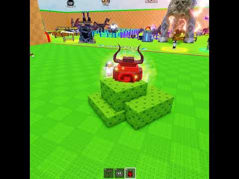

🥚 Troll cu „oul fals”: „I TROLLED This Kid With a Fake Egg 😂”, Gamer Bully, ~0,33M vizualizări

Un short de 30 de secunde de la Gamer Bully. În thumbnail se vede un ou roșu cu coarne, așezat pe un piedestal de blocuri verzi, pe o hartă verde, fără text pe cadru. Titlul spune că a păcălit un copil cu un ou fals. Copiem formula, nu filmarea. ⚠️ Hook-urile sunt deduse din thumbnail, nu spuse de creator.
📌 Clipul original
- 🎥 Gamer Bully, „I TROLLED This Kid With a Fake Egg 😂#stealanegg #roblox #usa”
- 📊 326.487 de vizualizări la marți, 27 oct, ~11:20 RO, orientativ. Clipul e din luni, 19 oct, deci în medie ~1,8K pe oră de la publicare
- ⏱️ Durează 30 de secunde
- ▶️ https://www.youtube.com/shorts/xkIeWsQWIjU
- 🔎 TikTok, de căutat în aplicație: „steal an egg fake egg troll”
🎬 Formula
- Un obiect-momeală lăsat la vedere, pe care îl vrea oricine
- Titlul spune totul (troll + ou fals), deci știi de la început ce urmărești
- Emoji 😂 în titlu, ca să promită o glumă, nu o ceartă
💡 Ideea VEXU
- 📱 Versiunea VEXU: cu un ou obișnuit, lăsat la vedere pe piedestal, fără admin și fără scripturi
- 🎬 Arăți doar mecanica din joc: cine se apropie, cine se răzgândește
- 🔤 Un text scurt pe ecran, de genul „E oul real?”, fără voce
Vezi și: Trollul care a rupt Steal an Egg peste noapte: https://pyromanc3r777.github.io/vexu-hq/posts/trollul-care-a-rupt-steal-an-egg-peste-noapte.html
Follow pe TikTok @vexu_online și abonare pe YouTube la VEXU Online. Follow = Au ce bile! 💥